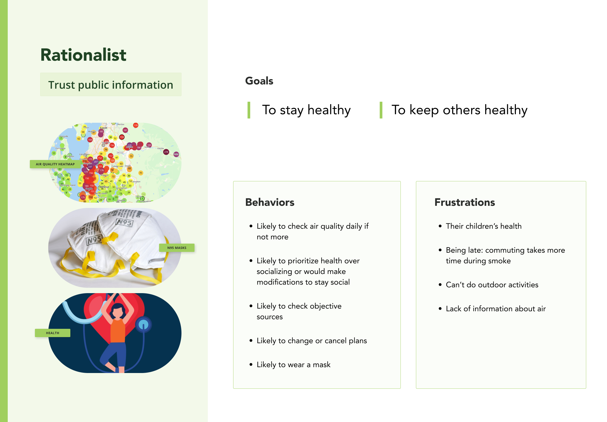
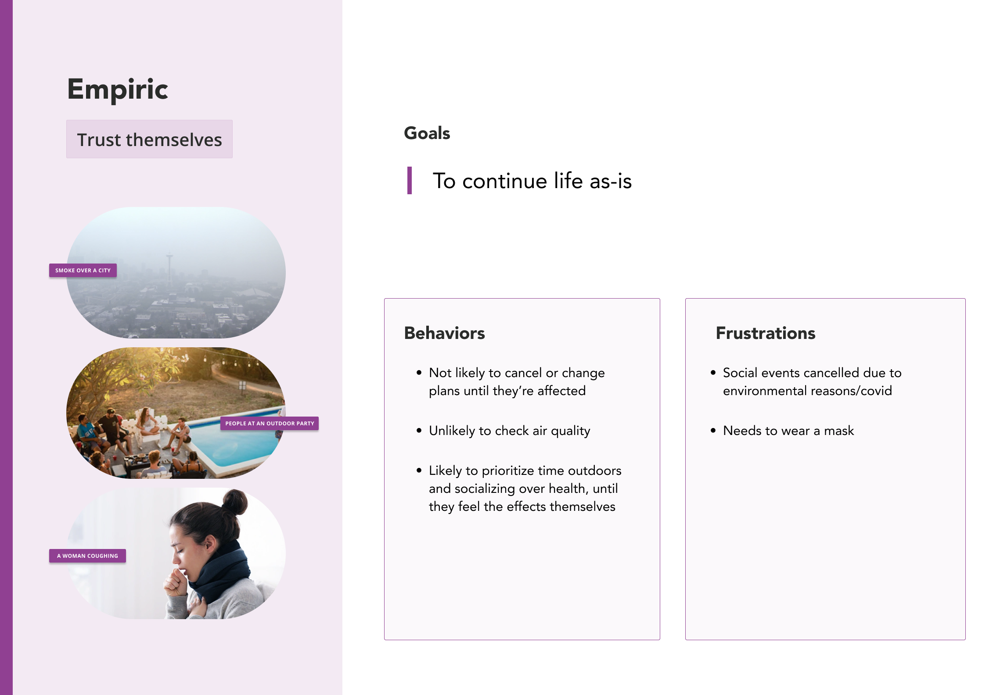
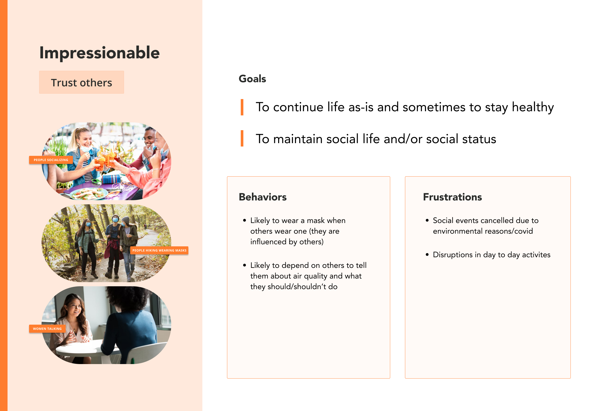
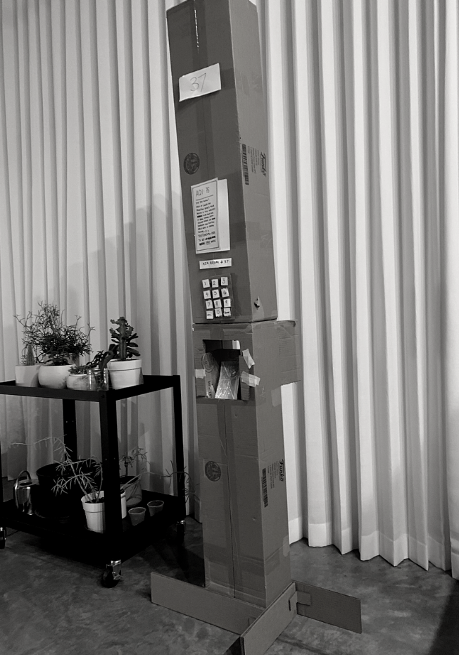

How we got there
Secondary Research, Surveys, Interviews
RESEARCH GOAL: gain a better understanding of Seattle residents who need (like construction
workers), or want (like outdoor enthusiasts) to go outside, as well as those with children
around how poor air quality impacts their interactions and daily lives.
Since our project centers around air quality and health effects, we started out with secondary research to gain a better understanding of which populations might be more sensitive to poor air. We then used this research as a base of what to ask in our surveys and our interviews. The interviews were used to probe more on daily behavior.
key takeaways
1. Poor air is dangerous to the health of all Seattle residents regardless of sensitivity label
Drawing on the research of experts in the medical field, wildfire smoke is made up of particulate matter (PM2.5) 2.5 which is small enough to be be inhaled deeply into the lungs. As wildfires worsen, the need for health research around long-term effects continues. Recent research has found that there may be a strong relationship between inhaling PM2.5 and reduced lung function, chronic bronchitis, pneumonia, asthma and COPD even in groups that aren't under the 'sensitive' group label(Youssouf et al., 2014; Liu et al., 2015; Reid et al., 2016a).
key takeaways
2. Differing opinions and behaviors towards air quality
"I changed my behavior when I saw it hit red because red signaled 'danger!' to me" - Interview participant. Above, a screenshot of AirNow.gov with a AQI of over 100, in the orange "Unhealthy for sensitive groups".
We used our secondary research to inform both our surveys and interviews. We collected 17 responses that focused on finding out what peoples beliefs, sentiments, actions and knowledge were concerning air quality. Almost all participants conducted outdoor activities at least once a week and mentioned they were likely to change their behavior if air was poor. Their most trusted sources were weather apps, followed by news mentioned by a friend and lastly government sites. Most were familiar with the AQI rating system, and had varying thresholds of what air quality they would consider safe to go outside in.
key takeaways
3. Understanding of effects of poor air quality on both short and long term were either wrong or severely underestimated
Based on our findings from 9 interviews, we found that everyone had differing opinions and behaviors when it came to air quality. From who they trusted as their source of information, to deciding which occasions were safe enough to venture outside with a mask. Many based theirdecisions from a glance–either at the color of the AQI meter, the word “unhealthy”, their weather app’s warning, or simply from looking outside. Their understanding of the effects of poor air to their health both short and long term were either wrong or severely underestimated.
PIVOTING DIRECTION
The process isn't always linear - changing our research question
Initially we wanted to explore physical prototypes or spaces where people could gather when air quality was poor, but due to the results of our research we decided that a public health solution would be more appropriate to addressing the bigger problem of lack of knowledge of the harmful and dangerous effects of air quality.
refining the audience
Persona Mindsets
We decided to approach ‘mindsets’ instead of fixed personas because our research showed that people could fluctuate between all three mindsets. For example, we had some people acting very rationally by wearing masks and staying indoors, but in the same week, they would compromise and flip to an Impressionable mindset when they wanted to attend an event outdoors.
Rationalist mindset:
Empiric mindset:
Impressinable mindset:
IDEATIOn
Time to design!
From our research findings, we found it was more important to pivot our solution towards a
public health design . We chose to create a system instead of a single solution in order to
increase the chances of residents to encounter information about air quality. We devised a
system that includes:
- Air Quality Station
- Text alert system
- Website for centralized information
Having multiple reminders about air quality will spark interest in being more informed about
bad air conditions.
Some of the sketches from our quick 8 exercises:
We considered a futuristic / exploratory solution:
While we entertained ideas around futuristic helmets and pop-up greenhouse kits, we thought a proposal that required a purchase or was difficult to access would be exclusionary. Instead, regardless of how our ideas manifested, our underlying proposal is that knowledge about unhealthy air and how to mitigate its effects is a matter of public health that needs to be proliferated with more urgency.
Final Sketch
Ultimately, we decided to concentrate on the Air Quality Station part of our system given the 10-week timeline.
prototyping
Building the [first] prototype
The first prototype:
prototyping
Process flows
In order to successfully design the system, we mapped out how a user could enter and use the system in several different ways. Below is a selection.
We also mapped out system diagram for how and when the air station would send alerts and dispense masks.
The interactive system flow
usability testing
Testing our prototype
Instead of testing the entire system, we decided to focus on one of the more complex interactions that we were trying to make, which was how a user approaches the air station and obtains a mask. We tested the SMS texting system with a real number during user testing.
Our first usability test was done immediately after our initial build to quickly test comprehension (left) and the text messaging UI. (right).
usability testing
Testing Guide
Test comprehension (~10ft)
Is there anything confusing about the air quality sign? Do participants understand what the color and text mean?
Test comprehension and task completion (~1ft)
Is there anything confusing about the printed and text instructions?
Tasks
- Think aloud and identify what they could see and could infer standing ~10 ft away
- Think aloud what they saw and understood standing ~1 ft away
- Get a mask from the air station
Iterations
Iteration 1: temporary instructions by hand and held together with tape
Iteration 2: signage printng and improvements from testing
Iteration 3: final design with update UI
Iteration
Testing and... more testing!
Our prototype went through 3(!) iterations. Working with a physical prototype meant we had to be more purposeful and intentional when improving the prototype.
- Participants were able to identify there was an alert or danger from afar.
- Most participants were confident the station was related to air quality.
- Participants did not understand the emoji version of the visualization.
- One participant attempted to "text" the number using the keypad istead of their phone
- Participants expressed a desire to better unerstand what the air quality levels were

Iteration
Improving the prototype
VISUALIZATION VARIATIONS
Reworking the visualization of air quality: We reduced the number of levels and improved
the
color
scheme based on our research and usability testing. Because some people relied on visual /
empirical evidence of air quality, it was important that just glancing at the visualization
will
tell the user what level it is. The visualizations went through user testing, and they are
understandable regardless of whether you are color blind or not. The final spec document also
includes some infrastructure specification like street clearance, height of keypad, to be in
accordance with building code and accessibility code.
our SOLUTION
Air Quality System
Final video demonstrating how the system works
Public alerts
- Alerts sent when air is hazardous
- Customizable alerts frequency (ex. alerts by air quality level or none at all)
Centralized information
- URL is sent to anyone getting a mask
- Centralized source for localized air quality levels and place where alerts can be customized
Air Station
- LED is easy to see from afar
- Localized air quality without cell reception or wifi
- Free N95 masks
- No app to download or website to load to get a mask
- URL with more information is sent when getting a mask
- One time codes deters bad actors and ensures sufficient supply of masks
- Accessible to those with colorblindness. Attempts to follow the building code (Section 307.2) for objects installed above ground level